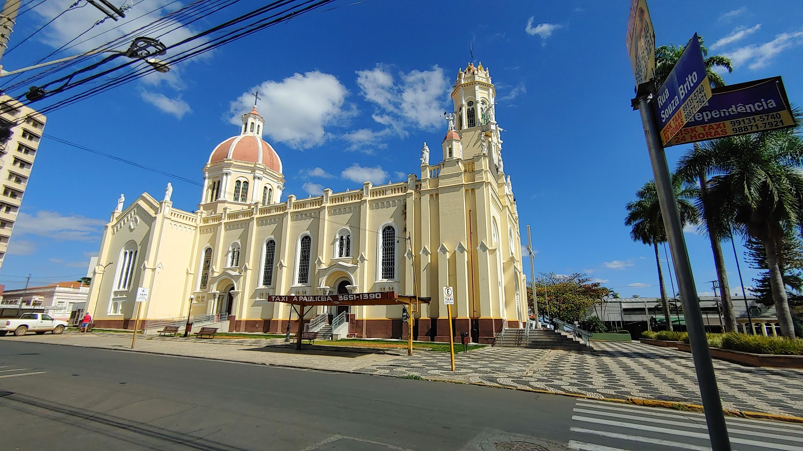
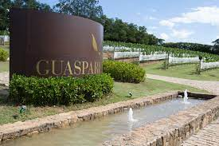

Igreja de Santa Luzia, Conhecido pela festa muito grandiosa na região

Igreja Matriz, umas das igrejas mais conhecidas da regiao e mais bonita

Teatro Avenida, o 5º teatro mais antigo do Brasil

Vinicula Guaspari, ganhou varios premios como melhor vinho de sua cetegoria